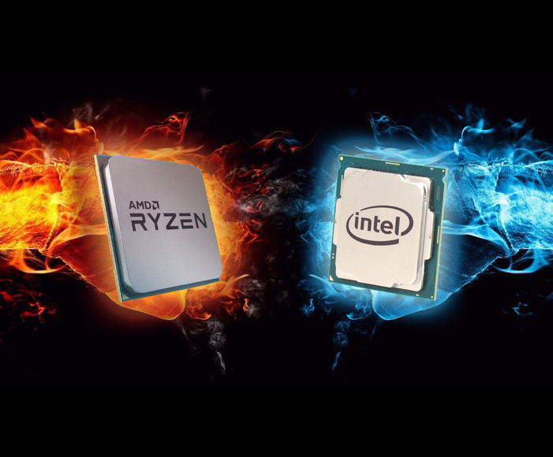

PROCESADORES PARA PC (Intel y AMD Ryzen)

El procesador se considera como el cerebro de cualquier dispositivo. Se encarga de procesar todas las instrucciones del dispositivo, leyendo las órdenes y requisitos del sistema operativo,
así como las instrucciones de cada uno de los componentes y las aplicaciones.